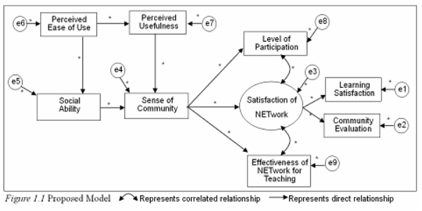
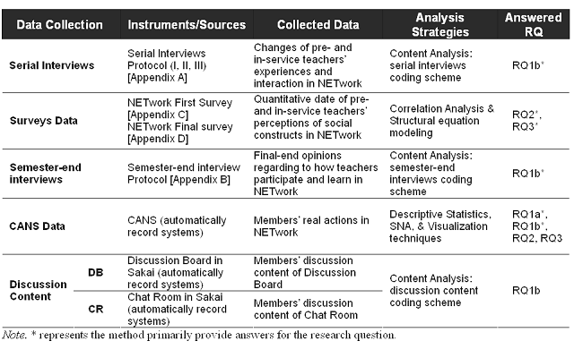

|
|
TITLE OF THE STUDYTitle: The Social Nature of an Online Community of Practice for Learning to Teach [PowerPint Presentation] Chair & Committee: ABSTRACTTaking advantage of Internet technology, an online community of practice, NETwork, was established to support a group of elementary science pre-service and in-service teachers' learning how to teach. To better understand how teachers can be supported and sustained while participating in an online community of practice, this study investigated the nature of members' participation, members' perceptions of social constructs of online learning experience, and members' learning in a community of practice. Three primary research questions were asked: 1) How do members participate in the primary learning activities through Chat Room discussion, Discussion Board discussion, and information sharing in Resources?; 2) How well does the proposed path model explain the relationships among the social constructs of online learning (i.e. sense of community, social ability, perceived ease of use, and perceived usefulness) and how well do those social constructs explain community outcomes/effects (satisfaction with NETwork experience and effectiveness of NETwork for Teaching)?; and 3) How do members' perceptions (sense of community, social ability, ease of use, usefulness, satisfaction with their NETwork experience, and of the effectiveness of NETwork for supporting teaching) change through participating in the community? RATIONALE OF STUDYIn the late 1990s online learning started to become an important channel for learning in higher education. Compared to face-to-face learning environments, online learning environments promote flexible collaborative space for learning by providing synchronous and asynchronous opportunities for learning anywhere and anytime. Overall online enrollment increased from 1.98 million in 2003 to 2.35 million in 2004. In 2004, 74% of public institutions of higher education identified online education as critical to their long-term strategy in sustaining learning (Allen & Seaman, 2004). Taking advantage of the ease of access and affordability of the Internet, universities and researchers have been establishing and testing online learning experiences not only for traditional course-based learning but also for communities of practice (CoP). For example, an online teacher community, NETwork (Nurturing Elementary Teachers' work), has been in place using Sakai course management system in order to sustain K-8 science teaching since August 2006. The purpose of NETwork established at University of Missouri is to overcome the current disconnect between teacher education and teaching practice and provide pre-service and in-service teachers a collaborative learning environment. This study is to examine how community of practice is established in this NETwork community through members' participation. Research PurposeAccording to CoP theory (Wenger, 1998), learning is a process of participating in social interaction and knowledge is constructed through reflection, sharing, and negotiating with others in the community. The purposes of this study are to understand the nature of participation, social constructs, and learning in a Community of Practice and to test a model of how well the social constructs of the online community explain the effectiveness of professional development in a community. First, this study will investigate how members act differently in different types of learning activity, such as sharing resources, Chat Room discussion, and Discussion Board discussion, will be explored. The patterns of members' participation levels across activities will be examined for better understanding of members' participation across time. In addition, the relationships among the social constructs of online interaction (i.e. social ability, sense of community, technology acceptance, learning satisfaction, level of participation, and effectiveness of NETwork for teaching) will be explored in order to understand how social constructs relate to each other and explain community outcomes and effects. A model of social constructs and effectiveness will be examined by testing a proposed structural equation model (SEM) (Figure 1.1) which has been constructed based upon a literature review. Finally, changes of members' participation patterns and changes of members' perception of social constructs will be investigated in order to understand how members' perceptions and behaviors change when participating in NETwork.  Research QuestionsIn order to accomplish the purposes of this study, three research questions will be addressed.
THEORETICAL FRAMEWORKPart I: Community of Practice
Part II: Nature and Social Factors of Online Participation in CoP
Part III: Online Professional Learning Community (PLC) in Teacher Education
METHODOLOGYTo answer the three research questions, multiple quantitative and qualitative methods will be employed in order to triangulate members' online learning experience of NETwork community. A set of self-report questionnaires will be administered in order to collect pre-service and in-service teachers' perception of technology acceptance, sense of community, social ability, satisfaction with the NETwork experience, and perceptions of effectiveness of NETwork for supporting teaching. Additionally, semester-end interviews will examine members' summative opinions about how they participated and learned in NETwork and serial interviews will be administered three times in order to capture members' changes of opinions regarding their participation and interaction. Finally, members' activity logs recorded in CANS (Context-aware Activity Notification System, Amelung, 2005) and discussion content recorded in Sakai system will be analyzed to describe members' behaviors. In order to accomplish the purposes of this study, four types of data, including quantitative survey data, qualitative interview transcripts, CANS data, and discussion content in DB and CR, will be collected and analyzed. Table below presents how the data will be used for answering the research questions. After that, how each research question will be answered with the collected data is explained.  | ||
|
Home | Resume | Research Projects | Teaching | Service | Ph.D. Dissertation | Program of Study |
|
E-mail: tsai1@uakron.edu |
© 2012 I-Chun Tsai, University of Akron |